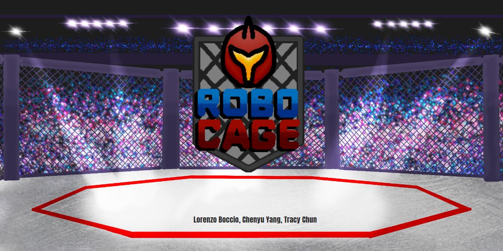
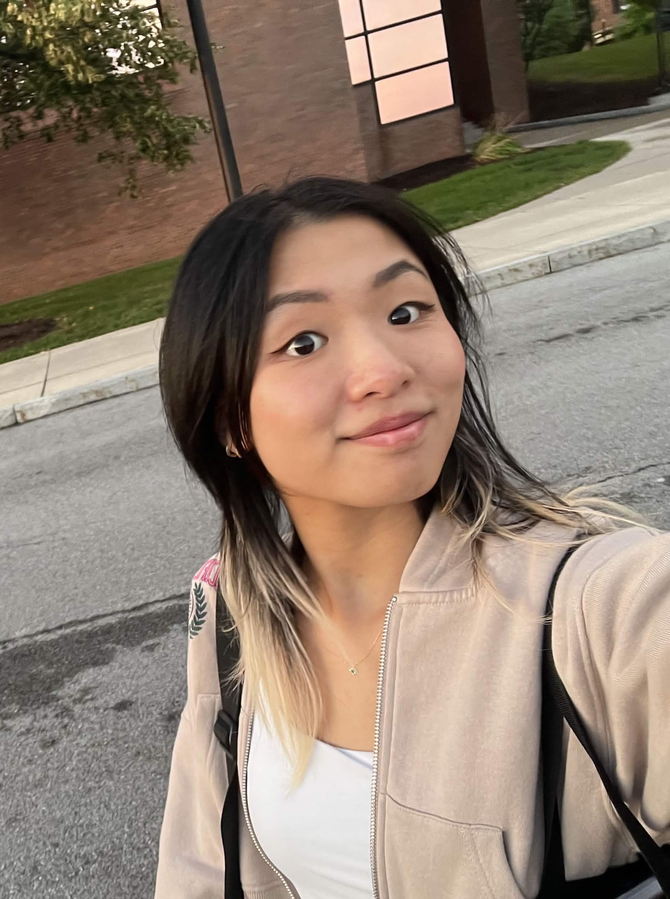
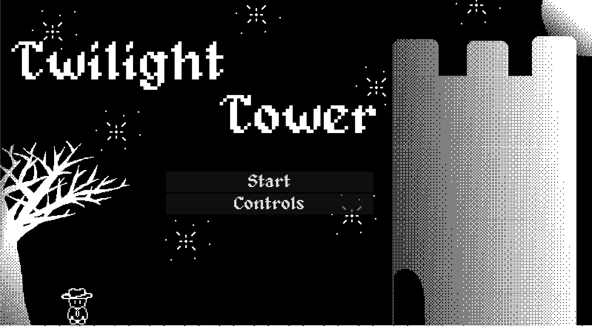
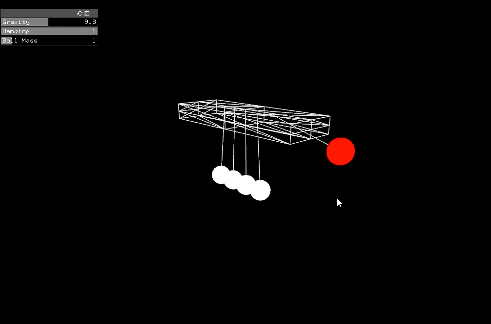

Brooklyn, NY
Hey, I'm Tracy
Part game designer, part problem-solver, full-time people person. I love building things and helping others fall in love with them too.

Projects


About me
Now loading: The lore of Tracy...
Hi there! My name is Tracy, in case you couldn't guess from how many times it's plastered across this page (haha). Like a lot of people, I grew up playing video games. Some of my fondest memories are staying up late on summer nights in middle school, watching my dad play Resident Evil 4 and The Last of Us. I remember being amazed that you could step inside a story and actually play it.
Not long after, I discovered I could download games on the family PC, so you bet I hogged that computer every chance I got. But my love for games didn't stop at playing them. Whenever I start a new game, my favorite thing to do is explore the world someone built. Studying Game Design and Development at RIT only made my appreciation for game developers grow. Seeing the detail they put into every corner for players, and hearing designers light up when they talk about their work, genuinely warms my heart.
That's when I realized I want to be that passionate about everything I do. Maybe that's impossible, but I'd love for my excitement about the things I care about to rub off on the people around me.
Games aside, I do have other hobbies, I swear! I've played badminton since middle school and still play every week. It's my favorite way to de-stress. Lately I've been rock climbing a lot, and beyond exercise, I'm a self-confessed hobby addict: painting, felting, scrapbooking, you name it.
Thanks for stopping by and reading a bit about me. Feel free to look around, and if anything here sparks your curiosity, I'd love to chat!